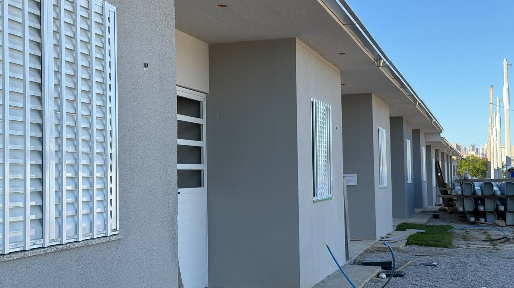

Itapema · Habitação
Itapema · HabitaçãoItapema abre inscrição para 90 casas do Minha Casa, Minha Vida, e o prazo é de 60 dias
A abertura do cadastro que fechou agora, com as regras de pontuação.
A Prefeitura de Itapema fechou nesta terça-feira, 13 de outubro, o cadastro do Residencial Campo Verde, do Minha Casa, Minha Vida. Entraram 2.077 famílias para 90 casas, o que dá 23 famílias por casa, conta nossa. A hierarquização dos inscritos é nesta sexta-feira, 16 de outubro, às 14h. Da conferência sai uma lista preliminar de 90 titulares e 27 suplentes, e as outras 1.960 famílias ficam fora. As casas têm 52 metros quadrados e dois quartos, e a entrega está prevista para o segundo semestre de 2027.
Em 30 segundos · Modo de Leitura, formato original Santa Informa
Itapema tem um conjunto do Minha Casa, Minha Vida em obra.
É o Residencial Campo Verde.
Fica no Sertão do Trombudo.
São 90 casas.
Cada uma tem 52 metros quadrados e dois quartos.
É da Faixa 1, a de renda mais baixa.
Atende família com renda de até R$ 3,2 mil.
O cadastro abriu em agosto.
Fechou na terça, 13 de outubro.
Entraram 2.077 famílias.
São 23 famílias por casa.
Essa divisão é conta nossa.
Agora vem a hierarquização.
É nesta sexta, 16 de outubro, às 14h.
Ela põe os inscritos em ordem de pontuação.
Ordem de inscrição não vale ponto.
Depois a comissão confere os papéis.
Pode pedir documento que falta.
Pode chamar para entrevista.
Pode visitar a casa da família.
Só então sai a lista preliminar.
Ela terá 90 titulares.
E 27 suplentes.
Somando, 117 famílias.
Isso deixa 1.960 de fora.
São 94,4% dos inscritos.
Essas duas contas também são nossas.
A Prefeitura não deu data para a lista preliminar.
Quem for listado tem 3 dias para recorrer.
O recurso entra pelo SISHAB.
O edital dá até 180 dias úteis para analisar recurso.
Mas a equipe fala em terminar até dezembro.
A lista final vai para a Caixa.
O banco confere renda e imóvel.
Quem assina o contrato é a Caixa, não a Prefeitura.
A entrega está prevista para o segundo semestre de 2027.
Poder PúblicoPublicada em Redação Santa Informa

A Prefeitura de Itapema encerrou nesta terça-feira, 13 de outubro, as inscrições para o Residencial Campo Verde, o conjunto do Minha Casa, Minha Vida que está em obra no Sertão do Trombudo. O cadastro fechou com 2.077 famílias. As casas são 90. Dividindo uma coisa pela outra, são 23 famílias para cada casa, conta nossa sobre o número que a Prefeitura publicou. A próxima etapa é nesta sexta-feira, 16 de outubro, às 14h, com a hierarquização dos inscritos, que é quando a lista ganha ordem.
A hierarquização não é sorteio nem fila de chegada. O aviso diz, com todas as letras, que a ordem de inscrição não gera vantagem. O que vale é a pontuação do edital, montada sobre o que cada família declarou: mulher responsável pela casa, presença de idoso, criança, adolescente ou pessoa com deficiência, doença grave na família, mulher vítima de violência doméstica e moradia em área de risco. O empreendimento é da Faixa 1, que atende renda bruta de até R$ 3,2 mil por mês.
Depois da sexta-feira começa a parte lenta. A Comissão Especial Municipal de Seleção Habitacional vai conferir renda, composição familiar e cada critério de pontuação, e pode pedir documento complementar, chamar para entrevista e fazer visita domiciliar. Só então sai a classificação preliminar, com 90 titulares e 27 suplentes. São 117 nomes. As outras 1.960 famílias ficam de fora, ou 94,4% de quem se inscreveu, duas contas nossas sobre os números do aviso.
Publicada a lista preliminar, cada candidato tem três dias corridos para recorrer pelo SISHAB. Daí a lista definitiva segue para a Caixa Econômica Federal, que faz a pesquisa de enquadramento, checando renda, financiamento habitacional ativo, propriedade de imóvel e benefício habitacional recebido antes. Quem contrata é o banco, não a Prefeitura.
Acompanhamos esse cadastro desde o começo. Contamos a abertura em 17 de agosto e, em 2 de setembro, a decisão de atender também aos sábados e domingos para quem trabalha durante a semana. Da nossa primeira matéria até o fechamento foram 57 dias. O Campo Verde é a ponta de baixo de um pacote maior: o secretário de Desenvolvimento Econômico e Habitação, Nicko Silva, falou em mais de mil unidades a caminho nas Faixas 2 e 3, e em 24 de agosto mostramos a concorrência de 1.120 apartamentos em que a Prefeitura entra com quatro terrenos. As casas do Campo Verde têm 52 metros quadrados, dois quartos, e a previsão de entrega é o segundo semestre de 2027.
O resumo de 30 segundos está no topo e a versão completa é o texto acima. Aqui ficam as três leituras da casa sobre o mesmo assunto.
Clara, a otimista
Duas mil e setenta e sete famílias é muita gente, e eu prefiro ler esse número pelo lado que ele tem de bom: o aviso chegou. Teve cadastro aos sábados e domingos, teve o CadÚnico aberto em dia marcado no CRAS Morretes, teve banner no site da Prefeitura. Quem precisava soube. Em programa habitacional, a fila comprida costuma ser sinal de que a informação circulou, e não só de que a necessidade existe.
E tem a parte física, que já está de pé. A foto que a Prefeitura publicou mostra casa com janela instalada, calha no beiral e calçada começando. Não é maquete, é obra andando, com data de entrega escrita. Para 90 famílias isso vira endereço em 2027.
Seu Prudêncio, o criterioso
Merece atenção o calendário. O aviso diz que o edital prevê até 180 dias úteis para analisar recursos e denúncias, e na frase seguinte diz que a equipe espera chegar à classificação definitiva até dezembro. Entre uma coisa e outra faltam uns bons meses, e quem lê fica sem saber em qual dos dois prazos se apoiar para organizar a vida. Uma sugestão útil seria a Secretaria publicar um cronograma com as etapas e as datas prováveis, mesmo que sujeitas a mudança.
Vale acompanhar também a conferência. São 2.077 cadastros para examinar um a um, com entrevista e visita domiciliar previstas, e o aviso não diz quantos servidores estão nessa tarefa. É o tipo de etapa em que o prazo escorrega sem que ninguém tenha errado nada.
Dito isso, é justo reconhecer o que a nota faz bem. Ela explica a ordem das etapas, diz que a ordem de inscrição não dá vantagem, e deixa claro que quem contrata é a Caixa. São três informações que evitam boato e expectativa errada, e nem todo aviso de programa habitacional traz as três.
Caco, o sarcástico
Vinte e três famílias para cada casa. Dá para montar um campeonato por unidade, com fase de grupos e tudo. E ainda tem a pontuação, que é onde o negócio fica sério: não adianta ter chegado cedo, não adianta ter feito o cadastro primeiro, não adianta conhecer ninguém. Vale o que está declarado no papel, conferido com visita em casa.
Reclamação registrada: 90 casas numa cidade onde o metro quadrado está entre os mais caros do país é pouco, e todo mundo sabe que é pouco. Mas também vou dizer o outro lado, porque é verdade: 90 é mais que zero, está em obra, tem data, e dá para ver na foto.
Agora é esperar a lista. E torcer para que a sexta-feira das 14h renda mais notícia do que fila.
Fontes: as 2.077 famílias inscritas, o encerramento em 13 de outubro, a hierarquização de 16 de outubro às 14h, a classificação preliminar com 90 titulares e 27 suplentes, os três dias de recurso pelo SISHAB, o teto de 180 dias úteis, a expectativa de dezembro, o papel da Caixa, o tamanho das casas e a previsão de entrega estão no aviso Cadastro habitacional do Campo Verde termina com 2.077 famílias inscritas, publicado pela Prefeitura de Itapema em 14 de outubro de 2026, de onde também sai a fala do secretário Nicko Silva. As divisões de 23 famílias por casa, de 1.960 famílias fora da lista, dos 94,4% e dos 57 dias são contas nossas sobre esses números, conferidas em 15 de outubro de 2026. Os critérios de pontuação, o teto de renda da Faixa 1 e a Comissão Especial Municipal de Seleção Habitacional estão em Itapema abre inscrição para 90 casas do Minha Casa, Minha Vida. O atendimento de fim de semana e a exigência do CadÚnico estão em Cadastro das 90 casas passa a atender no fim de semana. A concorrência dos 1.120 apartamentos das Faixas 2 e 3 está em Itapema abre concorrência para 1.120 apartamentos e entra com os quatro terrenos.
Itapema · HabitaçãoA abertura do cadastro que fechou agora, com as regras de pontuação.
 Itapema · Poder Público
Itapema · Poder PúblicoO esforço de atendimento no meio do prazo, e o CadÚnico que trava na porta.
 Itapema · Habitação
Itapema · HabitaçãoO outro lado do pacote de moradia da cidade, nas Faixas 2 e 3.